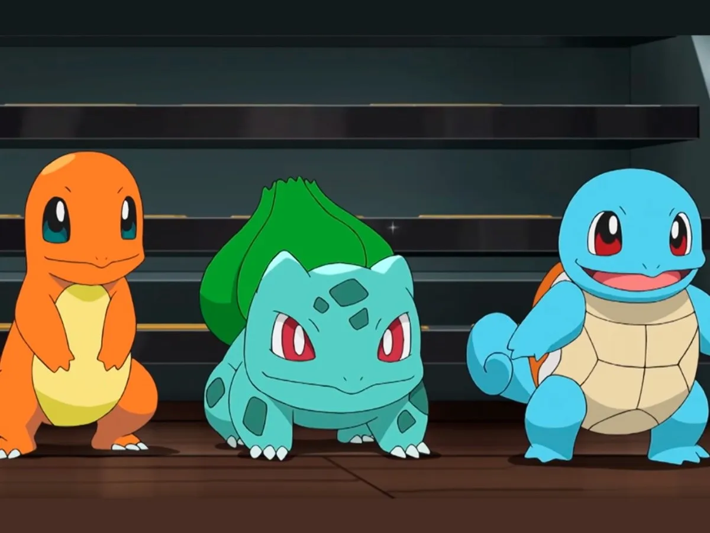
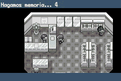

Pokemon: Red Fire
Introduccion
Pokémon Rojo Fuego y Pokémon Verde Hoja son las versiones reeditadas de los juegos originales Pokémon Rojo y Pokémon Verde (Rojo y Azul fuera de Japón), con las novedades de los juegos para Game Boy Advance de Pokémon Rubí, Pokémon Zafiro y Pokémon Esmeralda. También llamados "Pokémon Edición Rojo Fuego" y "Pokémon Edición Verde Hoja", ambas ediciones fueron lanzadas a las tiendas europeas el 1 de Octubre de 2004. Aunque estas ediciones sean los remakes de Pokémon Rojo y Pokémon Verde, se consideran de la tercera generación, incluían además un conector inalámbrico.

Historia
Como el juego original, llevas a tu personaje a través de Kanto. El Profesor Oak te da a elegir entre Bulbasaur, Charmander o Squirtle. Tu rival es el vecino de la casa de al lado y se enfrentará a ti con ventaja, pues elegirá al Pokémon inicial cuyo tipo será ventajoso contra el que tú elijas.
Deberás convertirte en el mejor entrenador Pokémon y para ello deberás derrotar a los ocho líderes de gimnasio para conseguir las medallas y así poder enfrentarte al Alto Mando. Por el camino tendrás que resolver algunas situaciones y dar su merecido al Team Rocket. Además deberás capturar a todos los Pokémon para completar la Pokédex y así ayudar al Profesor Oak en sus investigaciones. Tras haber ganado la Liga Pokémon podrás visitar un nuevo archipiélago (Islas Sete) donde se podrán seguir pequeñas historias secundarias y donde aparecen algunos Pokémon de otras generaciones.
Novedades con respecto a la 1ra Gen.
Tal como en las versiones Rubí y Zafiro, todos los Pokémon tienen su naturaleza propia y sus habilidades especiales. Además que se han incorporado dos nuevos objetos clave, presentes sólo en estos juegos: el memorín, un objeto que guarda información que recibimos sobre los personajes importantes del juego, como los líderes de gimnasio y el Alto mando; y el buscapelea, que permite que podamos volver a luchar contra los entrenadores a los que ya nos hayamos enfrentado por las rutas de Kanto.
En estos juegos además ahora existe un diario incorporado en el cartucho. Es algo parecido al diario de Pokémon Diamante, Perla y Platino porque también cada vez que el jugador inicia la partida hace recordar las 3-5 últimas cosas importantes que hicimos. Que pueden ser como: ganar a un entrenador, líder, alto mando o el campeón de la liga; guardar o sacar algún Pokémon en el PC; luchar o capturar un Pokémon, y varias cosas más. Este diario incorporado, no puede ser desactivado (a menos que se altere el juego). Las imágenes se suelen ver en escala de grises, simulando que son recuerdos, además de dar una breve explicación de lo que se hizo por medio de frases como "(tu nombre) ha salido del Bosque Verde, después de dar varias vueltas".
Curiosidades
- Los sprites de los Pokémon iniciales en los créditos son iguales a las Box Art de las versiones (japonesas) de GameBoy.
- Es el primer juego en dividir la Pokédex en áreas o territorios.
- La Pokédex no se expandió con las introducciones de las preevoluciones y evoluciones de algunos Pokémon de la primera generación.
- En los créditos, los Pokémon que aparecen hacen referencia a los juegos originales (Charizard por la edición Roja, Venusaur por la Verde, Blastoise por la Azul y Pikachu por Pokémon Amarillo).
- Al luchar contra las aves legendarias todas dirán "Artic!" siendo que este grito solo pertenece a Articuno (excepto cuando luches con Ho-Oh y Lugia, ellos tienen su grito característico).